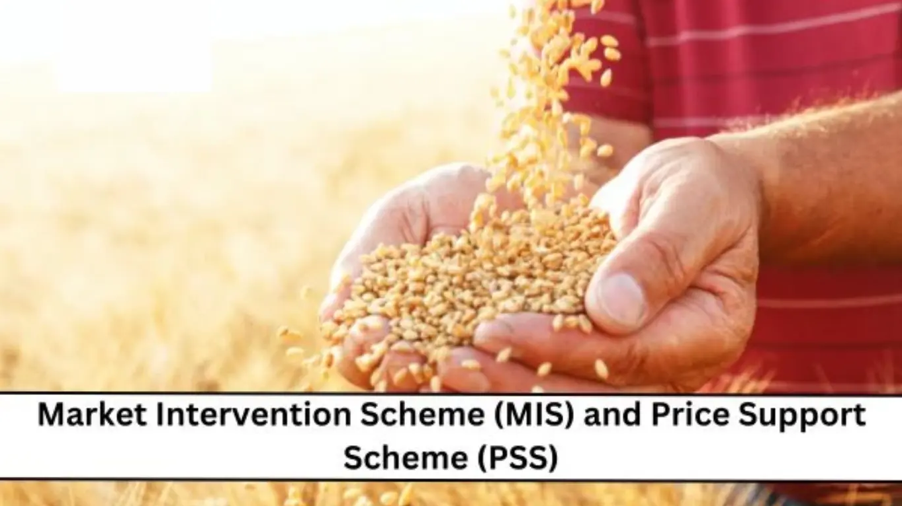

The Market Intervention Scheme (MIS) and Price Support Scheme (PSS) aim to provide farmers an opportunity to get a justified price for their crops. This central government scheme for farmers applies to perishable and horticultural commodities.
○ This scheme aims to provide the maximum possible price support system.
○ It provides income security for the farmers.
○ It covers crops like apple, garlic, malta, black pepper, ginger, red chilies, coriander seeds, and clove.
○ Eligibility for the Market Intervention Scheme (MIS) and Price Support Scheme (PSS) varies based on the specific scheme and guidance.
This applies when there is a minimum increase or decrease of 10% in the crop rates.
○ Any farmer, grower, and producer of perishable and horticultural commodities is the target audience.